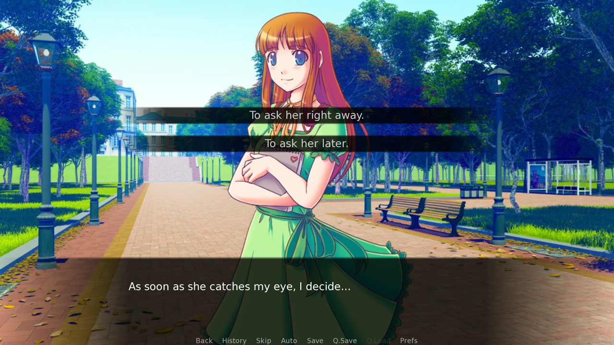
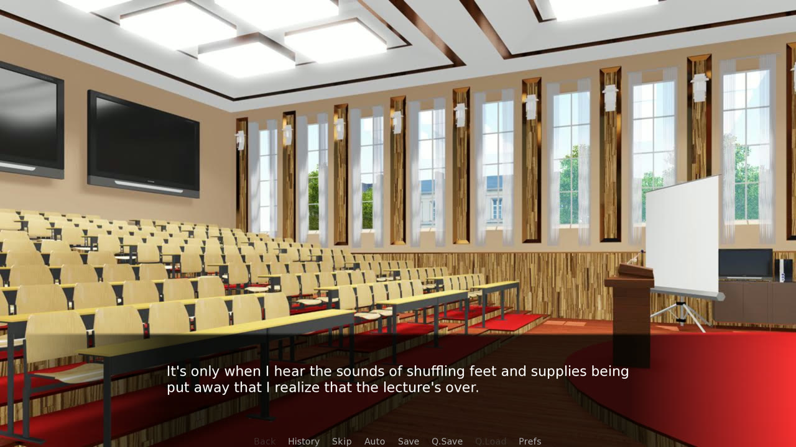
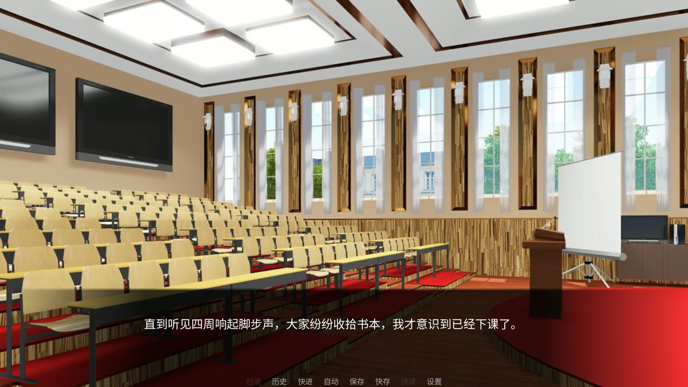

游戏与电影汉化实录
电影《Elephants Dream》
同一段 23 秒的对白，可以在原声与普通话之间切换。普通话版显示这次生成的中英双语字幕。
输入片段来自原片 00:45 至 01:08，没有字幕。技能听出 7 句对白。约第 6、8、13 秒，画面纹理被 OCR 误识为字母。预览与 MKV 均保留了这三处结果。
游戏《The Question》
Ren’Py 8.5.3 实机截图。点击画面可查看大图。
剧情选择



补译的开场对白



